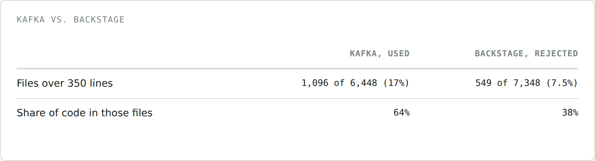
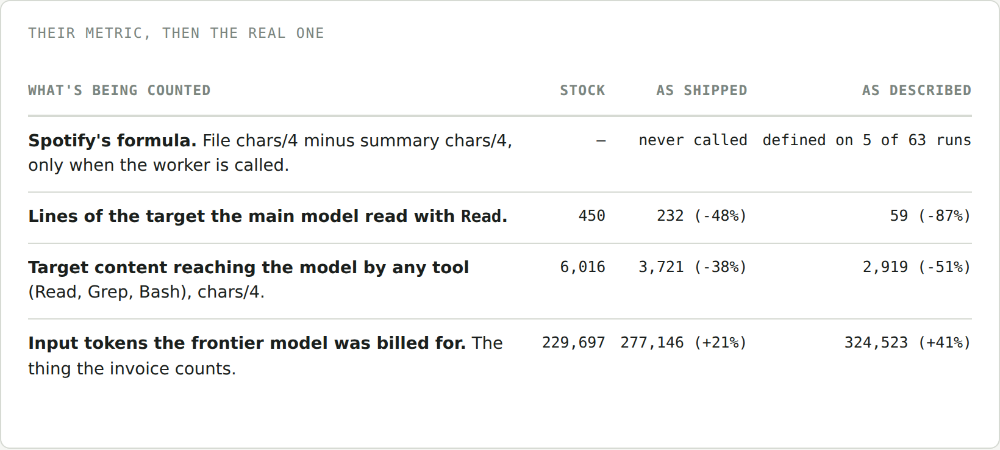
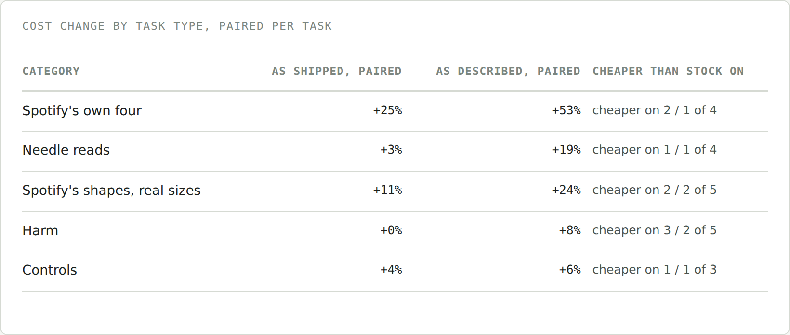

<title>Tokens Are Cheap, Turns Are Not</title>
<meta name="description" content="Spotify published a Claude Code plugin that blocks big file reads and hands them to a cheap model, claiming a 90% token cut. I rebuilt it on Kafka and measured the bill instead of the tokens.">
<link rel="stylesheet" href="https://fonts.googleapis.com/css2?family=IBM+Plex+Sans:wght@400;500;600&family=IBM+Plex+Mono:wght@400;500&display=swap">
<style>
  :root { --bg:#F5F6F3; --surface:#FFFFFF; --ink:#1B1F1D; --ink-2:#4A5350; --ink-3:#7B857F; --line:#D6DAD3; --stock:#0A9385; --hook:#B84E28; --soft:#ECEEE9; --tip:#EDF3EC; --tip-b:#5B8A6B; }
  @media (prefers-color-scheme: dark) { :root:not([data-theme="light"]) { --bg:#141816; --surface:#1C211E; --ink:#E6E9E4; --ink-2:#B4BBB5; --ink-3:#7F8882; --line:#313834; --stock:#1E9A8C; --hook:#C97440; --soft:#232925; --tip:#1B2420; --tip-b:#4E8760; } }
  :root[data-theme="dark"] { --bg:#141816; --surface:#1C211E; --ink:#E6E9E4; --ink-2:#B4BBB5; --ink-3:#7F8882; --line:#313834; --stock:#1E9A8C; --hook:#C97440; --soft:#232925; --tip:#1B2420; --tip-b:#4E8760; }
  * { box-sizing: border-box; }
  body { background:var(--bg); color:var(--ink); font-family:"IBM Plex Sans",system-ui,sans-serif; font-size:17px; line-height:1.65; padding-block:44px 90px; padding-inline:20px; }
  main { max-width:700px; margin:0 auto; }
  .kicker { font-family:"IBM Plex Mono",monospace; font-size:0.78rem; letter-spacing:0.08em; text-transform:uppercase; color:var(--ink-3); margin:0 0 10px; }
  h1 { font-size:2.1rem; line-height:1.2; margin:0 0 6px; letter-spacing:-0.01em; }
  .dek { font-size:1.15rem; color:var(--ink-2); margin:0 0 36px; max-width:56ch; }
  h2 { font-size:1.5rem; margin:56px 0 16px; letter-spacing:-0.005em; }
  h3 { font-size:1.1rem; margin:28px 0 10px; }
  p { margin:0 0 20px; }
  a { color:var(--hook); text-decoration-thickness: 1px; }
  em { font-style: italic; }
  .lede-em { font-style: normal; font-weight: 600; }
  code { font-family:"IBM Plex Mono",monospace; font-size:0.88em; background:var(--soft); padding:0.1em 0.35em; border-radius:4px; }
  pre.code { background:var(--soft); border-radius:8px; padding:14px 18px; overflow-x:auto; font-family:"IBM Plex Mono",monospace; font-size:0.82em; line-height:1.6; margin:8px 0 20px; color:var(--ink); }
  pre.code code { background:none; padding:0; font-size:1em; }
  pre.code .c { color:var(--ink-3); }
  figure { margin:32px 0; }
  figure img { width:100%; display:block; border:1px solid var(--line); border-radius:8px; background:var(--surface); }
  figcaption { font-family:"IBM Plex Mono",monospace; font-size:0.72rem; letter-spacing:0.05em; text-transform:uppercase; color:var(--ink-3); margin-top:10px; }
  .callout { border-left:3px solid var(--tip-b); background:var(--tip); border-radius:0 8px 8px 0; padding:16px 20px; margin:28px 0; }
  .callout .label { font-family:"IBM Plex Mono",monospace; font-size:0.72rem; letter-spacing:0.06em; text-transform:uppercase; color:var(--tip-b); display:block; margin-bottom:8px; font-weight:600; }
  .callout p:last-child { margin-bottom:0; }
  .callout.hook { border-left-color:var(--hook); }
  .callout.hook .label { color:var(--hook); }
  blockquote.tldr { border:none; margin:24px 0; padding:0 0 0 18px; border-left:2px solid var(--line); font-style:italic; color:var(--ink-2); }
  ul, ol { padding-left: 1.3em; margin: 0 0 20px; }
  li { margin-bottom: 10px; }
  li b { color: var(--ink); }
  .terms b { font-family:"IBM Plex Mono",monospace; font-weight:600; background:none; }
  hr.sec { border:none; border-top:1px solid var(--line); margin:48px 0; }
  .byline { color:var(--ink-3); font-size:0.9rem; margin: -16px 0 40px; }
  @media (max-width: 480px) { h1 { font-size: 1.7rem; } h2 { font-size: 1.3rem; } body { font-size: 16px; } }
</style>

<main>

<p class="kicker">Field dispatch</p>
<h1>Tokens Are Cheap, Turns Are Not</h1>
<p class="dek">Spotify published a Claude Code plugin that blocks the model from reading big files and hands them to a cheap worker instead, claiming a 90% cut in tokens. I rebuilt it on a real repo and measured the bill. The number they reported is real. The bill went up anyway.</p>
<p class="byline">Twenty-one tasks, three Claude Code setups, 189 offline sessions on one Java monorepo.</p>

<p>I feel like everyone's caught wind of the term <em>tokenomics</em> recently. From customer calls to consultants' LinkedIn posts, people are becoming more and more aware of AI spend and looking for a better way to quantify it. You can't price it for teams as a simple price per question. Instead, we need to think about question complexity and model power. Teams are measuring that complexity by the tokens needed. Makes sense.</p>

<p>That's led a lot of cost-wary teams to start building their own token optimizers. Seeing the trend take off, I wanted to dig into one of these examples myself. Last week, Spotify published a blog post that bounced around Hacker News and Reddit about a Claude Code plugin claiming a 90% cut in tokens. So in this piece, I'm taking you with me as we rebuild it and look under the hood.</p>

<blockquote class="tldr">TLDR; the token reduction Spotify reported is real on the metric they used: with their hook enforced, Claude read 87% fewer lines of the big files. The tokens the frontier model was actually billed for went up 41%, and the dollar cost went up 8% with the plugin as they shipped it and 19% with the hook doing what their post describes, at the same pass rate. Whether a given task came out cheaper was decided by the task, not by the plugin, and the reason isn't the greps or the worker — it's how Claude Code's own prompt caching prices a turn. A line count can't see any of that.</blockquote>

<h2>What Spotify built, and why</h2>

<p><b>The why:</b> the Spotify team noticed a trend in their Claude Code usage. A huge share of the tokens Claude Code used went toward tasks that didn't need the frontier-level reasoning power of high-powered LLMs.</p>

<p>For their use case, Spotify works on a large monorepo. In that repo, most of their questions or work end up falling into:</p>

<ul>
<li><b>Bulk file reads</b>: loading 700-plus-line files into context just to check a pattern or answer a question about a fraction of it.</li>
<li><b>Templated code generation</b>: writing boilerplate, configs, or scaffolding, where the structure is already known.</li>
</ul>

<p>Because Claude Code resends the whole conversation on every request, any large file that's entered into context once stays there and keeps getting rebilled on every turn after it. Spotify didn't want to keep paying frontier prices to carry around the parts of a file nobody asked about.</p>

<p><b>The what:</b> to fix this, Spotify implemented a more deterministic workflow for these task types. This deterministic workflow sends these requests to a smaller model to process and return key insights to Claude as context. They chose the Gemini 2.5 Flash model for this implementation, which takes the large file input, reads the files, and returns key context for Claude Code to read. They published it as a plugin called <em>shunt</em>, in their <a href="https://github.com/spotify/portal-ai-plugins/tree/b5ed620c6850f1ea7327b7cd9d0696aae0bf2d89/plugins/shunt">portal-ai-plugins</a> repository.</p>

<figure>
  
  <figcaption>Figure A · shunt's two delegation paths, at a glance</figcaption>
</figure>

<p>This is built with two Claude Code primitives working together:</p>

<ul>
<li><b>Skills</b> load instructions into context only when a task calls for them.</li>
<li><b>Hooks</b> are a checkpoint in front of a tool call, able to block or redirect it before the model ever sees the result.</li>
</ul>

<p>Spotify built two skills, bulk-reader and code-writer, disclosed when a request matches one of the two workflows above — really just instructions for how to hand a task off to the cheaper model and what to do with what comes back. The hook is what's supposed to force the choice: a <code>PreToolUse</code> hook checks a <code>Read</code> call's file against the 350-line threshold, and if it's over, blocks the call outright and points the model to bulk-reader instead of the raw file. A skill only helps if the model opens it. The hook is the enforcer layer that's meant to make sure it has to.</p>

<p>Here's the assumption everything rests on: when the model is refused a read, it does what the hook's message tells it to. Nothing about a <code>PreToolUse</code> hook enforces that — it can stop one tool call, but it has no say over what the model tries next.</p>

<blockquote class="tldr">TLDR; the skill is the manual. The hook is supposed to force the model to open it. Whether that actually holds is the seam this whole piece pulls on.</blockquote>

<p>The assumption they're making is that fewer tokens sent to the expensive model reads as a proportionally smaller bill. That equivalence, a token avoided is a dollar saved, is exactly what the rest of this post tests.</p>

<h2>Our Experiment: Building a Framework to Copy Theirs</h2>

<p>Does cutting tokens actually cut cost? That became the thesis of this evaluation. But as I began experimenting, I knew I wanted a holistic evaluation of the workflow the team had developed. I believe that all AI workflows, whether predictive, generative, or agentic, need to fit into the same evaluation triangle.</p>

<figure>
  <p style="border:1px dashed #999; padding:10px; color:#666; font-style:italic;">[Figure: the evaluation triangle — performance, latency, and cost. Pending design.]</p>
  <figcaption>The evaluation triangle</figcaption>
</figure>

<p>Getting a fair read on all three meant reproducing Spotify's setup as closely as an outsider reading a blog post can: their kind of repo, their hook, their two workflows, run against the plain baseline they're implicitly comparing themselves to.</p>

<h2>Experiment Design</h2>

<p>Every task ran under three setups, each one step from the last. <em>Stock</em> is Claude Code with nothing added. <em>As shipped</em> is stock plus Spotify's plugin exactly as published, offset/limit exception included. <em>As described</em> is the same plugin with that one exception removed, so the hook actually does what their post says it does. Both hook setups substitute a one-turn Haiku call for Spotify's hosted Gemini model, since I don't have access to their internal Portal system — the same substitute in both, so it's never what explains a difference between them.</p>

<h3>Why Kafka</h3>

<p>Spotify's code is private, so this needs a public repo that looks like theirs in the one way the hook cares about: lots of files over 350 lines, in a language their benchmark used. (There's a second, less obvious constraint: stock Claude Code already refuses to read very large files and pages anything over about 25,000 tokens on its own, so the target files have to sit between Spotify's 350-line threshold and Claude Code's own gates, or the hook never gets the chance to fire first.)</p>

<p>Backstage, Spotify's own open-source project, was the obvious first pick and lost: only 7.5% of its files clear 350 lines, holding 38% of its code. Apache Kafka has 17% of its files over that line, holding 64% of the code. The corpus is the Kafka trunk, pinned to one commit, in Java and Scala.</p>

<figure>
  
  <figcaption>Why Kafka was used as the corpus instead of Spotify's own open-source Backstage.</figcaption>
</figure>

<p>One honest limit: Kafka is a repo the model has seen in training, and Spotify's code is not. So every session in the final grid runs offline and sandboxed — no web tools, no network commands, no reading anything outside the checkout, a private empty <code>/tmp</code> per session, and a system-prompt line telling the model to answer from the repository, not memory. This constraint, Claude Code cut off from the internet, was applied to all three setups.</p>

<h3>Why We Ran It Through Claude</h3>

<p>One interesting thing I found in their codebase: Spotify's own benchmark never sends a single request through Claude Code. The eval is done explicitly on token count — the original file's token count compared against the summarized Gemini output.</p>

<p>To more thoroughly test the plugin, this evaluation runs through an actual Claude Code session. Every task runs the whole way through: one live, headless <code>claude -p</code> session per task per setup — the real Claude Code model, on the real repo, making its own tool calls, hitting the real hook, and choosing its own next move after a block. That's how this actually tests whether the model opens the skill, deals with the block, loads tokens into context, and drives the resulting cost.</p>

<h3>How It Ran</h3>

<p>So now we have Kafka, and we know we want to run it through Claude — I'm not going to sit there and prompt my Claude Code UI by hand. Nothing here is interactive: the harness unpacks a fresh, historyless Kafka checkout, drops in one setup's <code>.claude</code> folder — Spotify's plugin lives there as a project config, not a plugin install — and calls Claude Code once in headless mode with the task's question as the argument. This is the actual command, the same for all three setups:</p>

<pre class="code">CLAUDE_CODE_ENABLE_TELEMETRY=1 \
OTEL_EXPORTER_OTLP_ENDPOINT=http://127.0.0.1:4318 \
CLAUDE_CODE_PROMPT_CACHE_TTL=5m CLAUDE_CODE_SUBAGENT_PROMPT_CACHE_TTL=5m \
unshare -m bash -c 'mount -t tmpfs none /tmp && exec "$@"' _ \
claude -p "$PROMPT" \
  --model claude-sonnet-5 \
  --permission-mode acceptEdits \
  --settings "$HARNESS/settings.json" \
  --append-system-prompt "Answer from the repository checked out in the \
working directory. Do not rely on memory of the upstream project or on \
the internet." \
  --max-turns 40 \
  --output-format json</pre>

<p>The cache-TTL pin makes sure every setup pays the same rate for writing a file to the prompt cache, so the comparison can't be skewed by Claude Code silently switching billing tiers mid-run — that turns out to matter a lot in Discussion, below.</p>

<ul>
<li><code>--model</code> pins every setup to the same Sonnet 5 baseline, so no comparison is skewed by which model is running.</li>
<li><code>--settings</code> loads the offline sandbox.</li>
<li><code>unshare</code> gives the session its own empty <code>/tmp</code> so nothing it writes can be found by a later run.</li>
</ul>

<p>When it exits, the harness collects the billed cost and token usage, the full transcript, and the OpenTelemetry trace, diffs the workspace against the starting commit, grades the answer, and deletes the workspace. The next run starts clean.</p>

<h2>Evaluation Design</h2>

<h3>Why These Tasks</h3>

<p>As a non-Kafka expert, I'll admit I cheated a little and used Claude to think through which synthetic workflows or examples would make the most sense. I focused on five key workflow categories that I felt represented what Spotify explicitly named, in their blog, as workflows and future ideas. For each category, I wrote a handful of tasks, a small but early representative sample:</p>

<ul>
<li><b>Spotify's own benchmark (4 tasks).</b> Their four rows, rebuilt on Kafka at the same shapes and file sizes — so the comparison is theirs first.</li>
<li><b>Needle reads (4 tasks).</b> One fact buried in a file of 1,000 to 1,900 lines. This is the case Spotify's own motivation describes — read 700 lines to check one thing — and the case their benchmark never tests.</li>
<li><b>Their shapes at real file sizes (5 tasks).</b> The same question shapes as their four rows, but on files big enough to actually trip the 350-line threshold, which two of theirs never do.</li>
<li><b>Harm (5 tasks).</b> Precise edits and debugging — the two task types Spotify's own post says the approach isn't for. The hook only sees a line count, so it fires on these anyway; worth testing whether that comes at a cost.</li>
<li><b>Controls (3 tasks).</b> The same shapes on small files, where the hook can't fire at all, to measure what the plugin costs just by being installed.</li>
</ul>

<p>I ran three repetitions of every task, interleaved by setup so time of day never lines up with one setup by coincidence: 189 sessions, about $30 at list price.</p>

<h3>Why These Metrics</h3>

<p>Spotify's own evaluation was driven by a single metric: tokens avoided. I kept that metric to check their findings against my own, but it's not robust enough on its own to answer what this piece is actually asking: it never checks whether the answer was even correct, it says nothing about how many turns it took to get there, and it bakes in the exact assumption under test — that a token avoided is a dollar saved — instead of checking it. So I added three more dimensions from the evaluation triangle above, to get the fuller picture:</p>

<ul>
<li><b>Performance</b> — whether the task actually got done, since a cheaper answer isn't worth much if it's missing the point. Measured two ways: was the answer correct, and separately, was the right file even found — a correct answer that never touched the file is flagged as lucky, not counted as evidence the setup worked.</li>
<li><b>Cost</b> — what the headless Claude Code session actually cost, recomputed turn by turn from the transcript at list price and checked against what Claude Code itself billed. The headline number is paired per task: each task's own before-and-after difference, then the mean of those differences with an interval, not one pooled average across twenty-one very different questions.</li>
<li><b>Latency</b> — in agent work this tends to track cost almost 1:1, but it's worth measuring on its own for what it actually feels like to the person waiting on it. Wall clock, turns per run, per-turn duration, from OpenTelemetry.</li>
<li><b>Behavior</b> — the piece Spotify's own evals never produce, because nothing in their harness runs long enough to have a "next call" at all: what the model's very next call was after each block, and whether that call was the worker, a grep, or a paged read.</li>
</ul>

<p>Behavior earned its place the hard way. After the first pass at this grid, I realized Spotify's hook as published wasn't actually blocking — the offset/limit exception let the model page around it and get the whole file anyway. So I built a third setup, with that exception removed, to actually test the workflow enforced the way their post describes.</p>

<p>Every earlier pass at this grid also taught me a smaller control I was missing: the strict block message can't hint at the fallback ("use grep for exact lines") or it isn't measuring the model's own choice anymore — it's measuring an instruction I wrote. The final message is Spotify's, word for word, minus only the sentence about the loophole in the setup that closes it.</p>

<h2>Results</h2>

<p>Across all 189 sessions, both hook setups deliver on Spotify's own measure — less of the big file in the expensive model's context — and both cost more than stock. Each finding below comes with the reason for it, right there, rather than deferred to a separate section.</p>

<h3>The headline numbers</h3>

<figure>
  
  <figcaption>Figure G · twenty-one tasks, three runs each</figcaption>
</figure>

<p><b>Performance</b> is unchanged: 100% of stock runs passed, 98% as shipped, 97% as described — three failures in 189, one of them a checklist grader on a code-generation control, not the hook. <b>Cost</b> rose 8% as shipped and 19% as described, worker included; paired per task, the enforced hook's own 95% interval is +7% to +39%, which doesn't cross zero. <b>Latency</b> rose with it: 6.1 turns a run for stock, 7.7 as shipped, 9.2 as described; wall time from 39 seconds to 51. And on <b>behavior</b>: given a neutral refusal and a skill it's never opened before, the model delegated to the worker on 7 of 96 blocks — about one in twenty — and grepped or ran a shell search around the rest.</p>

<h3>Why cost rises even though less of the file enters context</h3>

<p>Depending on how you count it, "90% fewer tokens" is right, half right, or backwards. Spotify's own formula can't even be computed for most of this grid — it depends on the worker actually being called, which it was never was as shipped and on only 5 of 63 runs as described, so there's no clean before-and-after number to set next to stock's. The three counts below can be computed for every run, and each tells a different story:</p>

<figure>
  
  <figcaption>Three ways to count what "90% fewer tokens" could mean, means per run across the same 189 sessions.</figcaption>
</figure>

<p>Count lines pulled in through <code>Read</code> specifically, and the claim holds: down 87% with the loophole closed. Widen that to tokens — same Read content, plus whatever <code>Grep</code> or <code>Bash</code> separately turned up about the file — and it's a smaller 51% down, because a block that stops one Read doesn't stop the greps that follow it. Count what the frontier model is actually billed for across the whole session — the number the invoice runs on — and it goes the other way, up 21% as shipped and 41% as described.</p>

<p>The reason isn't the greps or the worker — both are cheap on their own: a grep result is a few hundred characters, and the whole worker call, numbered file in and summary out, runs about two cents. It's something a <code>PreToolUse</code> hook has no way to see, because it only ever looks at the one tool call directly in front of it, never at the conversation as a whole.</p>

<p>Here's what's actually happening on every turn. Claude Code has no memory between API calls, so the model sees the whole conversation so far, sent again from scratch, every single time it's asked anything. Three different costs show up in that exchange, and they're priced nothing alike:</p>

<ul>
<li><b>Writing new content to the cache, the first time it's read.</b> A one-time cost, at 1.25 times the price of a normal input token — a couple of cents for a file this size.</li>
<li><b>Reading everything already in the cache back, on every later turn.</b> This is the resend itself, and it's deliberately cheap: a tenth of the price of a fresh input token.</li>
<li><b>The model's own fresh thinking and answer, once per turn.</b> Brand new, never cached, priced about fifty times higher than a cache read.</li>
</ul>

<p>A hook only sees the one read it's blocking — it has no way to know how many more turns, each with its own full-price round of thinking, it'll take the model to get the same information a different way. Refusing the read doesn't remove the need to know what was in the file; it just delays it. That's the whole reason a token avoided isn't automatically a dollar saved: two of these three costs are nearly free. The one that isn't gets paid again on every extra turn it takes to ask a second, third, or ninth time.</p>

<h3>One traced example</h3>

<p>Here's that mechanism on one real question instead of an average, so "asking again" has an actual receipt. The question is one any Kafka developer might ask: <em>how does the broker lifecycle manager move between states?</em> The file that answers it is 770 lines, and it's carried through all three setups below.</p>

<p><b>Stock</b> greps for the class and reads it whole. Three turns, ten cents.</p>

<p><b>As shipped</b>, the read gets refused — but the hook still allows a paged read with an offset, so the model pages around the block and the whole file ends up in context anyway, one turn later. Nine turns, seventeen cents.</p>

<p><b>As described</b>, with that loophole closed, the model does what Spotify actually designed: it opens the skill, calls the worker, gets a real summary back, checks one thing with a grep, and answers. Also nine turns, fifteen cents including the worker.</p>

<p>Every answer is correct. The enforced setup is the one working exactly as intended, and it's still the most expensive of the three.</p>

<figure>
  
  <figcaption>Figure F · where the money actually went, same question, from the OpenTelemetry trace</figcaption>
</figure>

<p>This is the caching mechanism from above, on this one question, from the actual OpenTelemetry trace. The file-write bucket is about two cents in every setup, stock included, and barely moves. What grows is the resent-conversation bucket: paid three times by stock, nine times by both hook setups. The read the hook refused would have cost about two cents to write to cache. Paging around it added six cents of exactly this kind of resend. Delegating it added four, only two of which were the worker itself.</p>

<h3>By task type, and why</h3>

<figure>
  
  <figcaption>Figure H · cost change by task type, paired per task</figcaption>
</figure>

<figure>
  
  <figcaption>Hook cost relative to stock, by category, paired per task.</figcaption>
</figure>

<p>On 12 of the 21 tasks, all three repetitions land on the same side of stock — the split isn't noise, and the shape of the question explains it. Where the answer is a small slice of a big file — how three classes relate, which methods lack tests — the enforced hook is cheaper on every run, because a targeted grep does the job the whole-file read would have, at the same or fewer turns. Where the answer is most of the file — list every config key, generate a class from a 616-line reference, make a precise edit — it costs more on every run, because the content has to come in one way or another and the block just adds the turns it takes to get there. The table above is that pattern in numbers: Spotify's own four benchmark tasks and their scaled-up shapes are exactly where the block fires most and pays for it least, because those are enumerate-the-whole-file questions by construction. A line-count threshold has no way to tell "which of these" from "all of these" apart, and that distinction, not file size, is what actually predicts whether a block will pay off.</p>

<h2>Discussion</h2>

<h3>Let Claude Be Claude</h3>

<p>There's a broader case against a hook shaped like this, and it's not really about shunt specifically. Prompt caching — the exact mechanism doing the damage above — wasn't always priced this way; it's a relatively recent piece of how Claude Code bills a session, and it's the platform's own optimization, not something any plugin author decided to build around. And in this test's own stock arm, with no hook installed at all, the model already defaulted to grepping instead of reading the whole file on most of the needle and harm tasks. That's not something I configured. It's what Sonnet 5 already does inside Claude Code, today, for free.</p>

<p>Both of those are the harness getting cheaper on its own schedule, independent of any plugin. A hook keyed to a static proxy — file length — is making a bet against a moving target: every time the underlying platform gets better at exactly the thing the hook is trying to force (narrower reads, cheaper resends), the stock baseline it's being compared to improves without anyone touching the hook's code, and the hook's own case gets weaker. Token count was never a perfect stand-in for dollar cost, and it's a worse one with every release that makes the harness itself more efficient. The more durable move, if the goal is actually spend, is to let Claude be Claude — trust the platform's own continually-tuned defaults, and go looking for savings in the shape of the questions you're asking it, not in a rule bolted on top that assumes today's defaults are the ceiling.</p>

<h2>Conclusion</h2>

<p>Spotify's number is real, and it's the wrong number. "File size avoided, divided by four" measures exactly how many tokens a whole-file read would have cost, and once the hook actually enforces the block, it delivers most of that. What it never measures is the response to the block — a refusal is an instruction, not a delegation, and in this test the instruction was followed about one time in twenty. The other nineteen times, the model found its own way back to the same information, and paid the caching-priced cost of asking again to do it.</p>

<p>The honest limit on all of this: every run here is a single headless task, done in under a minute. Spotify's case is strongest in a long interactive session, where a big file sitting in context gets resent turn after turn for an hour, sometimes at a full cache rewrite — I didn't test that regime, and it's the one place their number and mine could both be right. But the general point survives it: a token avoided isn't automatically a dollar saved, a turn is the unit the invoice actually counts, and no hook that only watches the tool call in front of it — while the harness underneath it keeps getting better on its own — can tell the difference.</p>

<p>The five things worth remembering:</p>

<ul>
<li><b>The token metric is real, on its own terms.</b> With the hook enforced, Claude read 87% fewer lines of the big files — Spotify's own measure holds exactly as they defined it.</li>
<li><b>The bill went up anyway.</b> 8% as shipped, 19% as described, because Claude Code's own prompt caching prices the resent conversation, not the file, and a block just adds turns.</li>
<li><b>Whether a task got cheaper depended on the question, not the plugin.</b> Narrow, targeted questions got cheaper on every run; enumerate-the-whole-file questions got more expensive on every run.</li>
<li><b>The model followed the redirect about one time in twenty.</b> A hook can block a read; it has no say over what the model tries next.</li>
<li><b>If the goal is spend, the fix isn't a bigger hook.</b> It's watching what caching and the model's own defaults already do for free, and aiming any rule at the specific question shapes that don't benefit from them.</li>
</ul>

<p class="byline" style="margin-top:8px">The full write-up, with the deviations table, the metrics as equations, the validation checklist, and all 189 runs, is at <a href="https://github.com/hmassa14/TurnsNotTokens">github.com/hmassa14/TurnsNotTokens</a>.</p>

</main>
